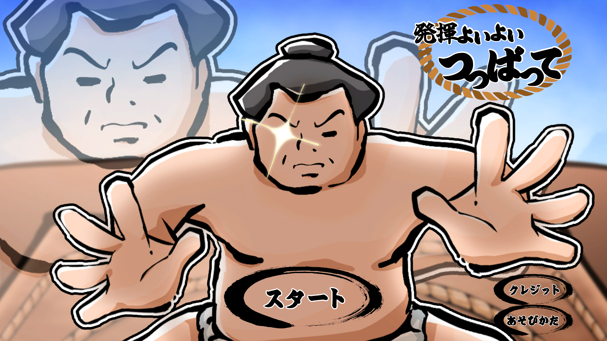

入力回数を距離へ変換
連打の結果を即座に移動へ反映し、自分の熱量が画面に出る仕組みを作りました。

入力と結果の関係を一文で説明できるコアルールに絞り、短時間でも盛り上がるパラメータを探りました。
連打の結果を即座に移動へ反映し、自分の熱量が画面に出る仕組みを作りました。
序盤の差で勝敗が固定されないよう、入力と移動量の関係を繰り返し調整しました。
ルール説明と一試合を短くし、対戦相手とすぐ交代・再戦できるテンポを優先しました。
WebGL版と共同リポジトリを公開しています。